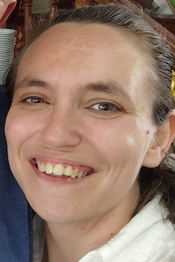

Cláudia Rodrigues

About Me
Education
- IT Technician Course - ESARS (2004 - 2008)
- Spors and Physical Recovery Massage Therapist -
IMT (2016 - 2017)
Work Experience
- Intern IT Technician - Prológica - Sistemas Informáticos S.A.
June 2008 - July 2008
- Development of an individual project;
- Maintenance and repair of computers and printers;
- Installing "images" on computers with Ghost software;
- POS Configuration;
- Cleaning and packaging equipment;
- Junior IT Technician (Repairs Area) - Prológica - Sistemas Informáticos S.A.
July 2009 - July 2013
- Project LÓGICA:
- - Diagnosis and repair of HP and DELL laptops and desktops;
- - Supply of equipment required for orders;
- Project E-Escolas e E-Universidades:
- - Diagnosis and repair of the entire range of Toshiba laptops
Projeto E-Escolas and E-Universidades project;
- Repair of personal customer equipment:
- - Diagnosis and repair of all types of laptops, desktops and tablets
(TOSHIBA only) from the brand HP, DELL, TOSHIBA, COMPAQ, etc.;
- HP Schools Project:
- - - Visit the site and diagnose and repair desktops
HP of the Schools Project.;
- Administrative Assistant
August 2014 - Present
- Reception and processing of documentation originating from
conservatories;
- Support to the most diverse areas, particularly in the Department
Billing;
- Process forwarding;
- General office dutty;
Skills
- Sense of organization 📇
- Autonomy and ability to organize work 📚
- Ability to set priorities and execute them 📊
- Perfectionist 👌
- Proactive 📝
Awards and Certifications
- English;
- Spanish;
- Microsoft Office;
- Navision;
- Data Base;
Other